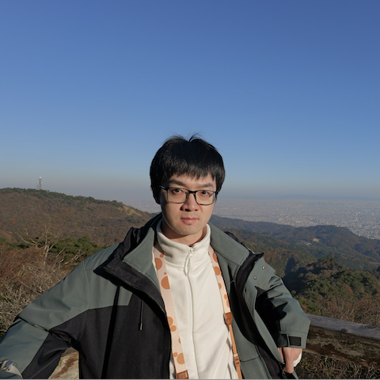
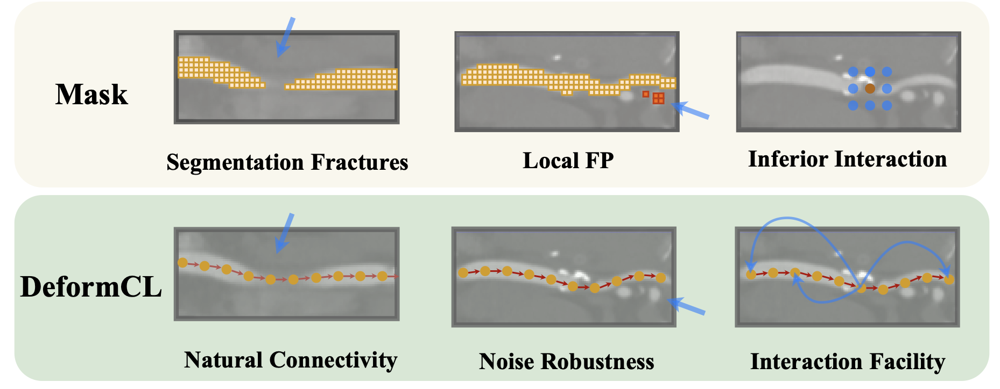
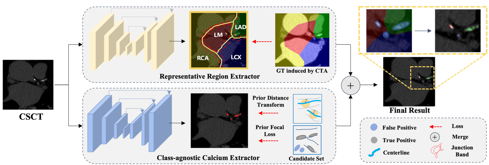
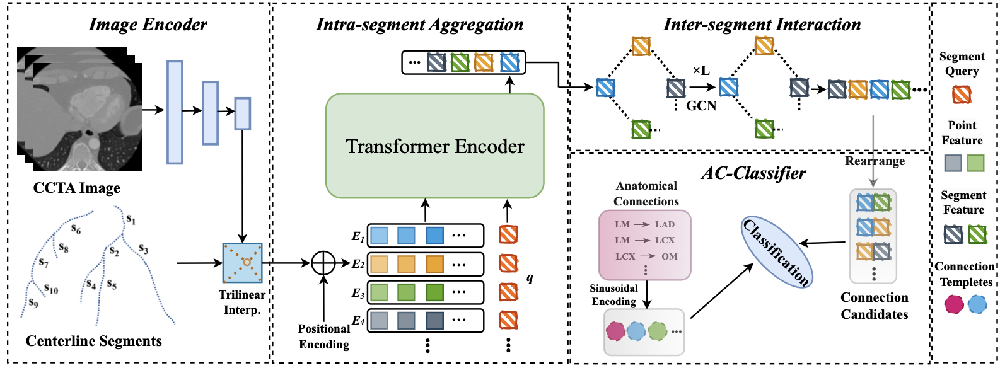
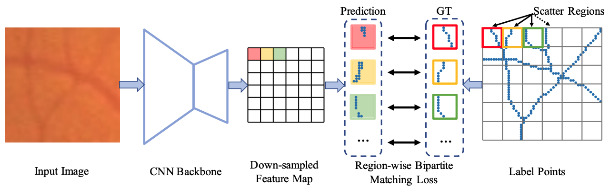
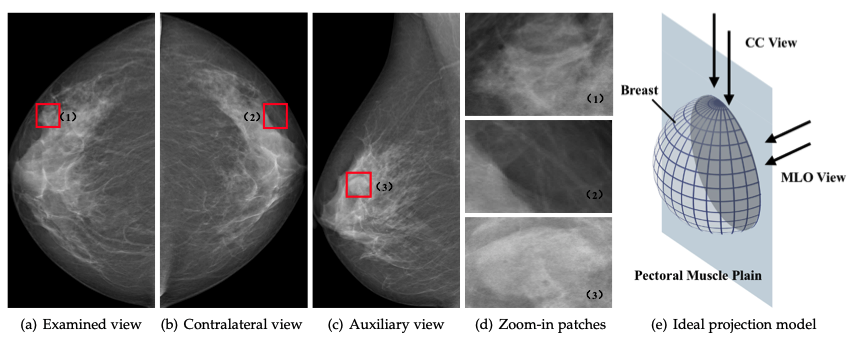
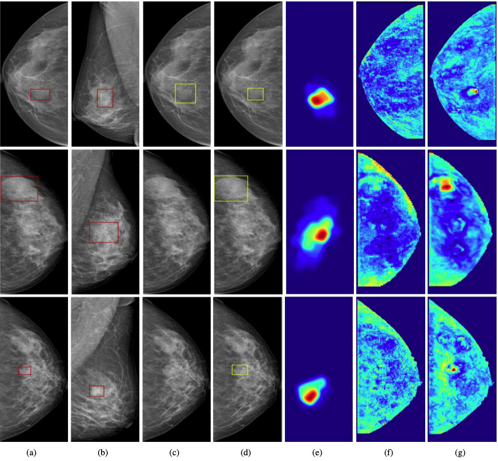
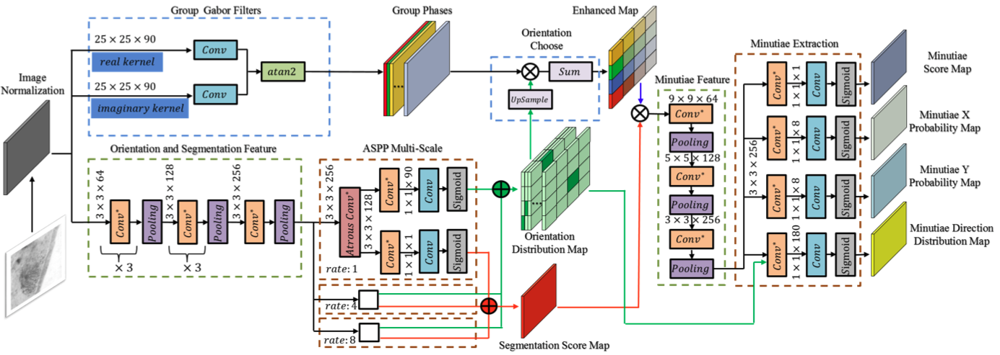

|
Yuhang Liu (刘宇航)
I am an R&D Expert leading a team in
YIZHUN, , driving innovation in AI-powered medical imaging.
My team has built multiple AI medical imaging products from the ground up, achieved
NMPA Class III certification,
secured 20+ patents,
and had three technologies officially recognized by the NMPA as
Key Core Technologies in China's Medical Device Industry.
Our products are now deployed in over 4,000 clinical sites, improving diagnostic efficiency and patient outcomes at scale.
My research interests lie at the intersection of deep learning and medical imaging,
bridging deep learning methodologies with real-world clinical applications.
Recently, I work on designing efficient algorithms for medical multimodal foundation model,
aiming to advance intelligent diagnostic systems and enhance clinical decision support.
I obtained my Master's degree from
School of EECS,
Peking University,
under the supervision of Prof.
Jufu Feng
in 2019, and my Bachelor's degree from
Xidian University
in 2016.
Email /
Google Scholar
|

|
|

|
DeformCL: Learning Deformable Centerline Representation for Vessel Extraction in 3D Medical Image
Ziwei Zhao*,
Zhixing Zhang*,
Yuhang Liu†,
Zhao Zhang,
Haojun Yu,
Dong Wang,
Liwei Wang
(* denotes equal contribution, † denotes project lead)
IEEE Conference on Computer Vision and Pattern Recognition (CVPR), 2025
paper
/
code
|
|

|
Learning Disentangled Representation for Vessel-specific Coronary Artery Calcium Scoring
Junjie Hou,
Nianxi Liao,
Jia Liu,
Yuhang Liu†,
Jianxing Qiu†
(† denotes corresponding author)
IEEE International Symposium on Biomedical Imaging (ISBI), 2024,
(Oral Presentation)
paper
|
|

|
Topology-Preserving Automatic Labeling of Coronary Arteries via Anatomy-aware Connection Classifier
Zhixing Zhang*,
Ziwei Zhao*
Dong Wang,
Shishuang Zhao,
Yuhang Liu,
Jia Liu,
Liwei Wang
International Conference on Medical Image Computing and Computer Assisted Interventions (MICCAI), 2023
paper
/
code
|
|

|
PointScatter: Point Set Representation for Tubular Structure Extraction
Dong Wang*,
Zhao Zhang*,
Ziwei Zhao
Yuhang Liu,
Yihong Chen
Liwei Wang
European Conference on Computer Vision (ECCV), 2022,
(Oral Presentation)
paper
/
code
|
|

|
Act Like a Radiologist: Towards Reliable Multi-view Correspondence Reasoning for Mammogram Mass Detection
Yuhang Liu*,
Fandong Zhang*,
Chaoqi Chen, Siwen Wang,
Yizhou Wang,
Yizhou Yu
IEEE Transactions on Pattern Analysis and Machine Intelligence (TPAMI), 2021,
paper
|
|

|
Cross-view Correspondence Reasoning based on Bipartite Graph Convolutional Network for Mammogram Mass Detection
Yuhang Liu,
Fandong Zhang, Qianyi Zhang, Siwen Wang,
Yizhou Wang,
Yizhou Yu
IEEE Conference on Computer Vision and Pattern Recognition (CVPR), 2020,
(Oral Presentation)
paper
|
|

|
FingerNet: An Unifified Deep Network for Fingerprint Minutiae Extraction
Yao Tang,
Fei Gao,
Jufu Feng,
Yuhang Liu
International Joint Conference on Biometrics (IJCB), 2017
(Oral Presentation)
paper
/
code
|
|
Selected Awards
ACM-ICPC Asia Regional, Silver Medal 2014
|
|
Academic Services
Journal Reviewer: TPAMI
Conference Reviewer: ICCV, ECCV, MICCAI
|
|
{kind=link}